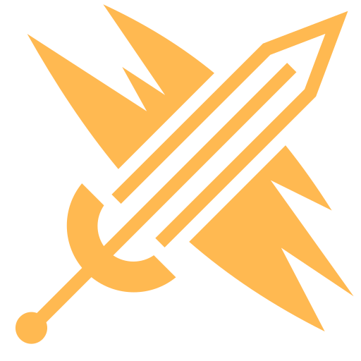
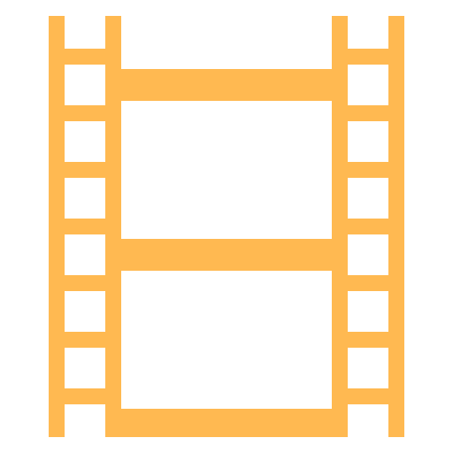
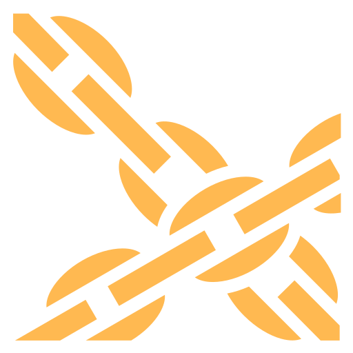
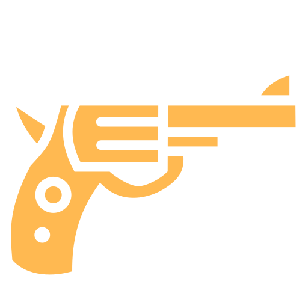
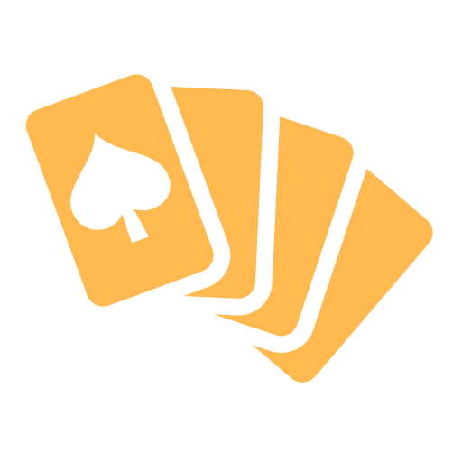
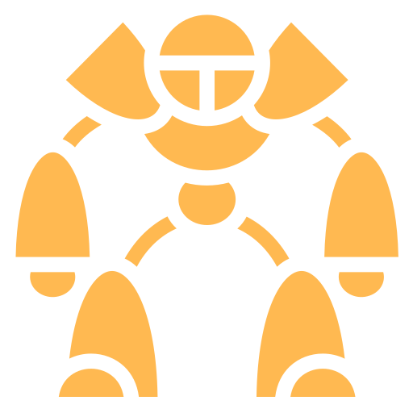

Atomech LLCDesign studiesInteractive rebuilds and simulators: jumping, hit feel, animation, dice and spells
The Basics of JumpingJump force, gravity and air control, step by step
 D&D Combat Roll SimulatorAttack and damage rolls as a table
D&D Combat Roll SimulatorAttack and damage rolls as a table
 BG3 Spell GraphsHow often D&D 5e, BG3 and WoW Classic reuse a spell design
BG3 Spell GraphsHow often D&D 5e, BG3 and WoW Classic reuse a spell design

Anatomy of a Successful AttackBen Ruiz’s nine layers of hit feel, on Aztez timing
Action AtlasGame animation library
God of War ChainsKratos’s model and combo chains, decoded
GoldenEye ArmoryClassic FPS weapon tunerD&D Combat Roll SimulatorAttack and damage rolls as a table

Monte Carlo Poker SimulatorHand odds by simulationBG3 Spell GraphsHow often D&D 5e, BG3 and WoW Classic reuse a spell design

Cats vs MechsWorkshop 16 allocation and fight sandboxAtomech LLCGame reference toolsBrowsers and trackers for games and their tech trees